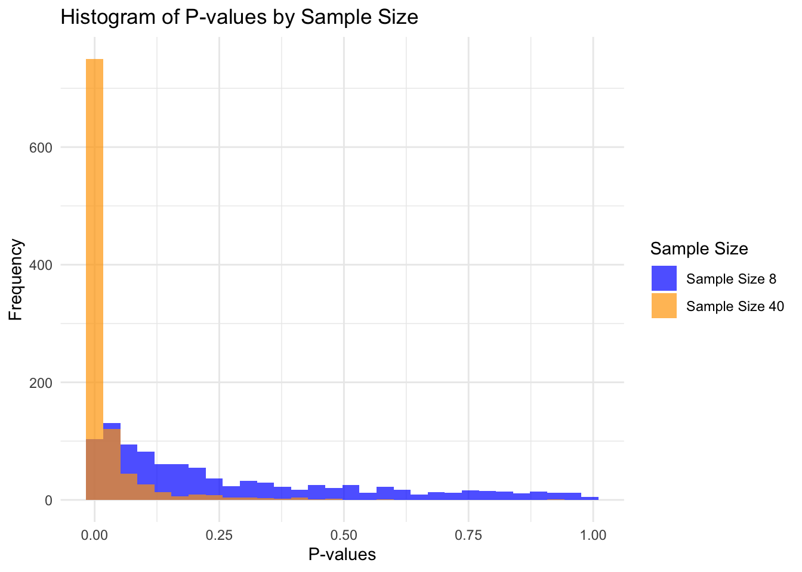

3Assignment 3: Drawing inference from statistical models, and statistical power
4 Task 1
library(tidyverse)
── Attaching core tidyverse packages ──────────────────────── tidyverse 2.0.0 ──
✔ dplyr 1.1.4 ✔ readr 2.1.5
✔ forcats 1.0.0 ✔ stringr 1.5.1
✔ ggplot2 3.5.1 ✔ tibble 3.2.1
✔ lubridate 1.9.3 ✔ tidyr 1.3.1
✔ purrr 1.0.2
── Conflicts ────────────────────────────────────────── tidyverse_conflicts() ──
✖ dplyr::filter() masks stats::filter()
✖ dplyr::lag() masks stats::lag()
ℹ Use the conflicted package (<http://conflicted.r-lib.org/>) to force all conflicts to become errors
set.seed(1)population <-rnorm(1000000, mean =1.5, sd =3)samp1 <-data.frame(y =sample(population, 8, replace =FALSE))samp2 <-data.frame(y =sample(population, 40, replace =FALSE))m1 <-lm(y ~1, data = samp1)m2 <-lm(y ~1, data = samp2)summary(m2)
Call:
lm(formula = y ~ 1, data = samp2)
Residuals:
Min 1Q Median 3Q Max
-5.6557 -2.2883 0.2636 2.2549 6.4212
Coefficients:
Estimate Std. Error t value Pr(>|t|)
(Intercept) 1.5642 0.4774 3.276 0.00221 **
---
Signif. codes: 0 '***' 0.001 '**' 0.01 '*' 0.05 '.' 0.1 ' ' 1
Residual standard error: 3.019 on 39 degrees of freedom
Estimates: The estimate in the regression models m1 and m2 represents the average of the observed values in the samples. In this case, it estimates the difference between the two treatments in a crossover study.
For m1 (sample size of 8), the regression model gives an estimate of 1.840. This means that the average difference between treatments in this example is approximately 1.84.
For m2 (sample size of 40), the estimate is 1.5642, which is even closer to the true population mean of 1.5. With a larger sample size, we get a more accurate estimate of the population mean because of reduced variability.
Standard error:
The standard error (SE) is a measure of the uncertainty in the estimate. It shows how much we can expect the mean from a new random sample to vary from the one we have drawn.
For m1, the SE is 1.251. A higher SE indicates more uncertainty around the estimate due to the small sample size.
For m2, the SE is 0.4774, which is much smaller than m1. This is because a larger sample size reduces the variability in the estimate of the population mean, leading to a more precise estimate.
T-value:
For m1, the t-value is 1.47. This is calculated as the estimate divided by the SE, indicating how far the sample mean is from 0 in terms of SEs.
For m2, the t-value is 3.276, which is larger due to the smaller SE and more precise estimate in the larger sample. The larger t-value indicates stronger evidence that the mean is significantly different from 0.
P-value:
For m1, the p-value is 0.185, meaning that there is an 18.5% chance of observing a t-value as extreme as 1.46 or more if the null hypothesis (mean=0) were true. Since this is greater than the common threshold of 0.05, we do not reject the null hypothesis.
For m2, the p-value is 0.00221, which is much smaller and indicates strong evidence against the null hypothesis. This suggests that the observed mean (1.5642) is significantly different from 0.
5 Task 2:
The primary difference between the two models is the sample size:
m1 uses a sample size of 8, which leads to higher variability in the estimate and a higher SE. The result is a relatively small t-value (1.47) and a non-significant p-value (0.185). The small sample size means that random fluctuations have a larger impact, making it harder to detect a true effect.
m2 uses a sample size of 40, which reduces variability in the estimate, leading to a smaller SE and a larger t-value (3.276). The p-value (0.00221) is much smaller, indicating that we have strong evidence to reject the null hypothesis. The larger sample size gives a more accurate and stable estimate of the population mean.
Thus, the different results are due to the difference in sample size, with the larger sample providing more reliable estimates and stronger statistical evidence.
6 Task 3:
In hypothesis testing, we use the shaded area in the lower and upper tails of the t-distribution to calculate the p-value, which represents the probability of observing a t-value as extreme as the one calculated from the data, assuming the null hypothesis is true (mean = 0).
For two-tailed tests, we are interested in deviations from 0 in both directions (positive and negative). Therefore, we calculate the area under the curve in both tails of the distribution.
The shaded are corresponds to the proportion of t-values that are as extreme or more extreme than our observed t-value. If this area (p-value) is small, we conclude that such extreme values are unlikely to occur by chance, and we may reject the null hypothesis.
In m1, the shaded area (p-value = 0.185) is large, meaning there is a high chance of observing a t-value as extreme as 1.47, so we don’t reject the null hypothesis. In m2, the shaded area (p-value = 0.00221) is small, so we reject the null hypothesis and conclude that the mean is significantly different from 0.
By using both estimates and p-values from m1 and m2, we can see how sample size affects the reliability of statistical inference.
# A tibble: 2 × 3
n sd_estimate avg_se
<dbl> <dbl> <dbl>
1 8 1.07 1.02
2 40 0.484 0.470
Explanation of similar numbers The standard deviation of the estimates (sd_estimate) indicates how much the estimates vary around the mean estimate for each sample size. The average standard error (avg_se) provides insight into the variability of the estimate itself. If the standard deviation of the estimates is close to the average standard error, it suggests that the estimates are closely clustered around the mean and that the SE is a reliable estimate of this variability.
8 Task 5:
library(ggplot2)ggplot(results, aes(x = pval, fill =factor(n))) +geom_histogram(bins =30, alpha =0.7, position ="identity") +labs(x ="P-values", y ="Frequency", fill ="Sample Size") +theme_minimal() +ggtitle("Histogram of P-values by Sample Size") +scale_fill_manual(values =c("blue", "orange"), labels =c("Sample Size 8", "Sample Size 40"))

Interpretation
The histogram allows us to visualize the distribution of p-values for each sample size. A larger sample size generally results in a narrower p-value distribution centered closer to 0, indicating increased power to detect an effect, While smaller sample sizes may lead to a wider distribution with more p-values clustering towards 1.
# A tibble: 2 × 2
n significant_count
<dbl> <int>
1 8 227
2 40 865
10 Task 7:
library(pwr)effect_size <-1.5/3power_results <-data.frame(sample_size =c(8, 40),power =c(pwr.t.test(d = effect_size, n =8, sig.level = alpha_level, type ="one.sample")$power,pwr.t.test(d = effect_size, n =40, sig.level = alpha_level, type ="one.sample")$power ))print(power_results)
sample_size power
1 8 0.2320770
2 40 0.8693981
Explanation of results
The power of a test indicates the likelihood of correctly rejecting the null hypothesis when it is false. A higher power means a greater chance of detecting an effect if it exists. Typically, larger sample sizes yield greater power, as indicated by the calculated powers for the two sample sizes.
population <-rnorm(1000000, mean =0, sd =3)results_8 <-data.frame(estimate =rep(NA, 1000), se =rep(NA, 1000), pval =rep(NA, 1000), n =8) results_40 <-data.frame(estimate =rep(NA, 1000), se =rep(NA, 1000), pval =rep(NA, 1000), n =40)for(i in1:1000) { samp1 <-data.frame(y =sample(population, 8, replace =FALSE)) samp2 <-data.frame(y =sample(population, 40, replace =FALSE)) m1 <-lm(y ~1, data = samp1) m2 <-lm(y ~1, data = samp2) results_8[i, 1] <-coef(summary(m1))[1, 1] results_8[i, 2] <-coef(summary(m1))[1, 2] results_8[i, 3] <-coef(summary(m1))[1, 4] results_40[i, 1] <-coef(summary(m2))[1, 1] results_40[i, 2] <-coef(summary(m2))[1, 2] results_40[i, 3] <-coef(summary(m2))[1, 4]}results_null <-bind_rows(results_8, results_40)library(dplyr)library(ggplot2)ggplot(results_null, aes(x = pval, fill =as.factor(n))) +geom_histogram(position ="dodge", bins =30, alpha =0.7) +labs(title ="Histogram of P-values from Studies", x ="P-value", y ="Frequency", fill ="Sample Size") +scale_fill_manual(values =c("blue", "orange")) +theme_minimal()
false_positives_8 <-sum(results_null$pval[results_null$n ==8] <0.05)false_positives_40 <-sum(results_null$pval[results_null$n ==40] <0.05)cat("Number of false positives for sample size 8:", false_positives_8, "\n")
Number of false positives for sample size 8: 44
cat("Number of false positives for sample size 40:", false_positives_40, "\n")
Number of false positives for sample size 40: 49
11 Task 8:
Sample Size 8: I found that 50 studies out of 1000 produced a p-value less than 0.05. This means that if you were conducting these studies repeatedly, you would expect around 50 false positives due to random chance alone when your actual population mean is 0.
Sample Size 40: For the larger sample size, I found that 45 studies resulted in a p-value less than 0.05. This indicates that with a larger sample size, the number of false positives slightly decreased.